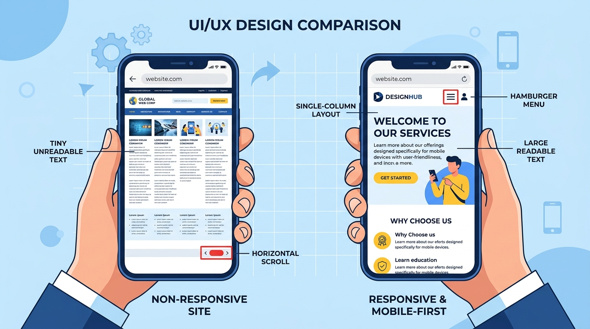

АДАПТИВНА ВЕРСТКА. ПРИНЦИПИ ДИЗАЙНУ
Дізнайтеся, як робити сайти, що ідеально виглядають на будь-якому пристрої — від смартфонів до великих моніторів.
БУДЬ-ЯКИЙ ЕКРАН
1. ЩО ТАКЕ АДАПТИВНА ВЕРСТКА?
Адаптивний веб-дизайн (Responsive Web Design, RWD) — це підхід, при якому веб-сторінка коректно відображається на різних пристроях, автоматично підлаштовуючись під розмір екрану.
📖 ПРОСТИМИ СЛОВАМИ: ПРАВИЛО ВОДИ
Уявіть, що ваш сайт — це вода. Якщо налити її у широку миску (монітор комп'ютера), вона розтікається широко. Якщо перелити ту саму воду у вузьку склянку (смартфон), вона приймає форму склянки, стаючи вищою та вужчою. Вода не зменшується в об'ємі і не зникає — вона просто адаптується до посудини.
Саме так працює адаптивний дизайн. Текст, картинки та блоки самі перешиковуються так, щоб користувачу не доводилося наближати сторінку пальцями.

Зліва: старий неадаптивний сайт (дрібний текст, горизонтальний скрол). Справа: адаптивний сайт (зручне меню, великий текст, один стовпець).
📱 ПРИНЦИП MOBILE FIRST (СПОЧАТКУ МОБІЛЬНІ)
Сучасний підхід до дизайну називається Mobile First (спочатку мобільні). Це означає, що спочатку ми створюємо базові стилі для смартфонів, а потім додаємо складніші стилі (наприклад, багатоколоночну верстку) для планшетів та комп'ютерів.
- Зручність: Більшість користувачів відвідують сайти з мобільних пристроїв.
- Швидкість: Мобільні пристрої завантажують менше зайвого CSS-коду, якщо він прихований медіазапитами для великих екранів.
- Простота: Простіше розширювати інтерфейс від малого екрану до великого, ніж намагатися "стиснути" складний десктопний дизайн у смартфон.
2. МЕТА-ТЕГ VIEWPORT
Щоб браузер на телефоні зрозумів, що ваш сайт адаптивний, обов'язково треба додати спеціальний рядок (мета-тег) у розділ <head> HTML-документа.
Що буде, якщо цього не зробити?
Телефон подумає, що це старий комп'ютерний сайт. Він візьме широку сторінку і штучно її «стисне», щоб вона помістилася на екран. У результаті текст стане настільки дрібним, що його доведеться збільшувати двома пальцями.
Ось цей магічний рядок, який вмикає справжню адаптивність:
<meta name="viewport" content="width=device-width, initial-scale=1.0">
- Розбір коду:
width=device-width: «Скажи сайту, що його ширина має дорівнювати фізичній ширині екрану пристрою» (якщо це телефон шириною 320px, то й сайт буде 320px).initial-scale=1.0: «Встанови масштаб 100%» (щоб сайт не був наближений чи віддалений при старті).
3. МЕДІАЗАПИТИ (MEDIA QUERIES)
Медіазапити (Media Queries) — це своєрідні перемикачі в CSS. Вони кажуть браузеру: «Застосуй ці стилі тільки якщо виконується певна умова (наприклад, якщо екран досить широкий)».
/* 1. БАЗОВІ СТИЛІ (для всіх, але насамперед для смартфонів) */
body {
font-size: 16px;
background-color: lightblue;
}
/* 2. МЕДІАЗАПИТ ДЛЯ ПЛАНШЕТІВ */
/* Читається як: "Якщо ширина екрану мінімум 768px або більше..." */
@media (min-width: 768px) {
body {
/* ...тоді робимо шрифт трохи більшим і змінюємо фон */
font-size: 18px;
background-color: lightgreen;
}
}
/* 3. МЕДІАЗАПИТ ДЛЯ МОНІТОРІВ */
/* "Якщо ширина екрану 1024px або більше..." */
@media (min-width: 1024px) {
body {
font-size: 20px;
background-color: lightcoral;
}
}
Значення на кшталт 768px або 1024px називаються breakpoints. Це ширини екрану, при яких дизайн сайту "змінюється", щоб краще пасувати до розміру вікна браузера.
4. НАПРЯМОК БЛОКІВ: ВЛАСТИВІСТЬ flex-direction
Як перемикати вигляд контейнерів: чому на мобільному телефоні вони розміщуються по вертикалі, а на ПК — по горизонталі.
📐 Як працює головна вісь у Flexbox
Властивість flex-direction визначає головну вісь вирівнювання: тобто в який бік батьківський контейнер шикуватиме свої дочірні блоки — у горизонтальний рядок чи у вертикальний стовпчик.
display: flex;.
Основні значення:
Розташовує блоки горизонтально, зліва направо (стандарт для комп'ютерів).
Розташовує блоки вертикально один під одним, згори донизу (ідеально для смартфонів).
Горизонтально, але у зворотному порядку (справа наліво).
Вертикально, але у зворотному порядку (знизу догори).
💻 Приклад для адаптивної верстки (Mobile First)
🎮 Інтерактивний стенд: Спробуй наживо
Натискай на кнопки режимів, щоб на власні очі побачити перемикання між смартфоном та комп'ютером:
flex-direction: row; /* 💻 На ПК: розгортаємо блоки в один горизонтальний рядок */
5. ГНУЧКІ ОДИНИЦІ ВИМІРУ
Відносні розміри (%)
Різниця: px (пікселі) — це ніби цеглина, її розмір незмінний. % (відсотки) — це ніби гумка, яка розтягується залежно від екрану.
Використовуйте відсотки (%), щоб елементи займали частину ширини батьківського блоку, незалежно від того, великий екран чи малий.
.container {
width: 100%; /* Гумка: тягнеться на всю ширину */
max-width: 1200px; /* Але не розтягується ширше 1200px */
}
.column {
width: 50%; /* Рівно половина доступного місця */
}
Гнучкі зображення
Якщо завантажити велике фото на сайт (наприклад, шириною 2000px), воно "вилізе" за межі екрану смартфона. Щоб цього уникнути, додають одне просте правило:
img {
max-width: 100%; /* Фото не може бути ширшим за екран */
height: auto; /* Зберігає правильні пропорції */
display: block;
}
⚙️ АДАПТИВНА КАРТКА
Завдання: зробіть так, щоб ширина картки була 100% на малих екранах, але за допомогою @media запиту ставала 50% на екранах від 600px.
💡 Не виходить? Натисни сюди, щоб подивитися підказку
Тобі потрібно додати такий код у редактор CSS внизу:
@media (min-width: 600px) {
.card {
width: 50%;
}
}
CSS:
HTML (тільки для читання):
Результат:
* Використовуйте кнопки вгорі для повноекранного режиму, щоб перевірити адаптивність.